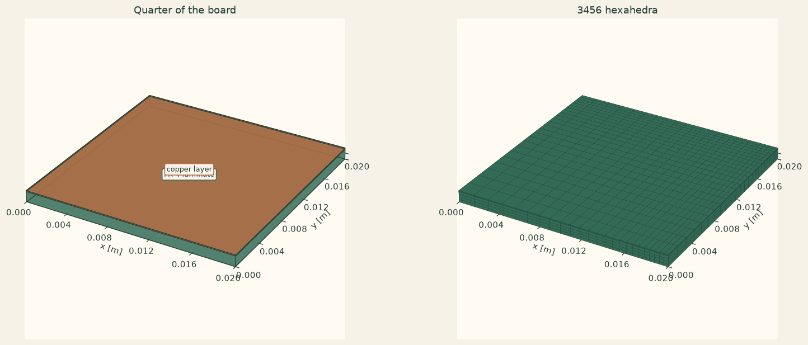

Docs › Examples › Thermal warpage of a printed circuit board
Thermomechanics · 3D
Thermal warpage of a printed circuit board
A circuit board with a full copper layer on one side only, heated from room temperature to the 260 °C reflow peak, bows into a dish.
Run locally with OneSimulation. The example downloads are free. Running them requires an activated runtime. Runtime Alpha 0.2.1a7 · CPython 3.13 on macOS (Apple Silicon), Ubuntu 22.04 (x86-64), and Windows x64. Installation and activation · View pilot plans. Scope of the reference checks.
Focus – Structures & Mechanics covers this workflow for commercial use. Seven-day trial, then €39 per month before any applicable tax.
Start the Focus trial on Gumroad Trial and cancellation details

What it computes
OneSimulation computes the temperature with a heat-conduction model and hands it through a field coupling to 3D linear elasticity with region-wise layer properties and thermal strain, on graded quadratic hexahedra of one quarter of the board read from STEP. Two meshes check the result. The script that builds the STEP files comes with the notebook.
What it checks
The corner deflection of -304.3 µm matches classical laminate theory (-304.8 µm) to 0.15 % on both meshes, and the in-plane stresses at the centre agree within 0.2 % at all four layer faces (-6.85, 12.86, -36.87 and -23.40 MPa); the warpage is 0.54 % of the board diagonal.
Geometry
The notebook starts at the import of the CAD files pcb_thermal_warpage.step, pcb_thermal_warpage_copper.step: STEP (AP242), readable by any CAD program, with the names of the faces that the boundary conditions use. Put them next to the notebook.

The geometry script
The script pcb_thermal_warpage_geometry.py builds the geometry with the CAD objects of OneSimulation and writes the files. Change a dimension there, run it, and run the notebook again.
"""Geometry of the OneSimulation example "Thermal warpage of a printed circuit board".
Builds one quarter of a 40 x 40 mm circuit board with the CAD objects of OneSimulation: the FR-4
laminate (1.0 mm) with a full copper layer (0.1 mm) on top, written to pcb_thermal_warpage.step;
its faces keep the names x_min, x_max, y_min, y_max, z_min and z_max (x_min and y_min are the
symmetry planes through the centre of the board). The copper layer, which marks the region of the
second material, is written to pcb_thermal_warpage_copper.step.
"""
from onesim.cad.d3 import Box
mm = 1e-3
half, laminate, copper = 20 * mm, 1.0 * mm, 0.1 * mm
Box(length=half, width=half, height=laminate + copper).save("pcb_thermal_warpage.step")
Box(length=half, width=half, height=copper, origin=(0.0, 0.0, laminate)).save(
"pcb_thermal_warpage_copper.step"
)The notebook
The complete notebook, cell by cell. Run it to produce the figures and the comparison printout.
A board is a laminate of materials with different thermal expansion: glass-fibre epoxy (FR-4), copper, solder mask. If the stack is not symmetric about its mid-plane, heating bends it. Warpage during reflow soldering (peak around 260 °C) lifts component leads off their pads and is limited by industry standards to a fraction of a percent of the board diagonal.
Here a square board of 40 mm side consists of 1.0 mm FR-4 with a full 0.1 mm copper layer on top, stress free at 25 °C and heated uniformly to 260 °C:
| layer | \(E\) | \(\nu\) | \(\alpha\) (in-plane) | |---|---|---|---| | FR-4 | 22 GPa | 0.15 | \(14\cdot10^{-6}\) 1/K | | copper | 117 GPa | 0.34 | \(17\cdot10^{-6}\) 1/K |
The copper expands more, so the board bows with its copper side outwards. One quarter of the board comes from the CAD file pcb_thermal_warpage.step (faces x_min ... z_max; x_min and y_min are the symmetry planes), the copper layer from pcb_thermal_warpage_copper.step; the script pcb_thermal_warpage_geometry.py builds both with the CAD objects of OneSimulation.
| face | mechanics | |---|---| | x_min / y_min | symmetry, \(u_x=0\) / \(u_y=0\) | | centre point of the lower face | \(u_z=0\) | | all other faces | traction free |
Reference. Away from the edges a thin laminate under a uniform temperature change takes a spherical shape (classical laminate theory; Timoshenko, J. Opt. Soc. Am. 11, 233, 1925, for the bimetal strip). With the biaxial moduli \(E_i/(1-\nu_i)\) the in-plane stress of each layer is
the two balances fix the mid-plane strain \(\varepsilon_0\) and the curvature \(\kappa\), and the corners move by \(-\kappa\,(L/\sqrt2)^2/2=-\kappa L^2/4\) relative to the centre.
from dataclasses import replace
import numpy as np
from onesim.cad.d2 import Plane
from onesim.cad.exchange import load
from onesim.materials import IsotropicSolid
from onesim.meshing import Geometric, Piecewise, StructuredHexahedralMesher, Uniform
from onesim.numerics import Numerics
from onesim.numerics.fem import FiniteElement, Lagrange
from onesim.numerics.field_transfer import FiniteElementEvaluation
from onesim.numerics.linear import SparseDirect
from onesim.physics.heat_transfer import FixedTemperature, HeatConduction
from onesim.physics.solid_mechanics import (
FixedDisplacementComponents,
IsotropicThermalExpansion,
LinearElasticity,
TractionFree,
)
from onesim.simulation import Problem, Simulation, regionwise
from onesim.simulation.field_connections import FieldCoupling
from onesim.visualization import plots, theme
theme.set()Geometry and mesh
The hexahedral mesh has four cells through the laminate and two through the copper and gets finer towards the free edges, on two in-plane resolutions.
board, copper = load("pcb_thermal_warpage.step"), load(
"pcb_thermal_warpage_copper.step"
)
faces = board.boundaries
half, _, thickness = board.size
layer = copper.size[2]
laminate = thickness - layer
meshes = [
StructuredHexahedralMesher(
cells=(n, n, 6),
grading=(
Geometric(n, ratio=4.0, toward="end"),
Geometric(n, ratio=4.0, toward="end"),
Piecewise(((laminate, Uniform(4)), (layer, Uniform(2)))),
),
).generate(board)
for n in (12, 24)
]
view = plots.Camera(elevation=30, azimuth=-60)
fig = plots.figure(1, 2, size=(14, 5.5))
plots.geometry(
[board.named("FR-4 laminate"), copper.named("copper layer")],
camera=view,
title="Quarter of the board",
ax=fig[0],
)
plots.mesh(
meshes[-1],
groups=("all",),
legend=False,
camera=view,
title=f"{meshes[-1].cell_count} hexahedra",
ax=fig[1],
)
plots.show()Model
The layer properties are assigned region by region. The uniform reflow temperature comes from a heat-conduction model and enters the mechanics as thermal strain through a field coupling.
layers = {"FR-4": (22e9, 0.15, 14e-6), "copper": (117e9, 0.34, 17e-6)}
room, reflow = 298.15, 533.15
stack = lambda index, unit: regionwise(
((copper, layers["copper"][index]),), default=layers["FR-4"][index], unit=unit
)
material = replace(
IsotropicSolid(
density=1900.0,
specific_heat_capacity=1100.0,
thermal_conductivity=0.3,
youngs_modulus=1e9,
poisson_ratio=0.3,
thermal_expansion_coefficient=1e-6,
),
youngs_modulus=stack(0, "Pa"),
poisson_ratio=stack(1, "1"),
thermal_expansion_coefficient=stack(2, "1/K"),
)
numerics = Numerics(
spatial=FiniteElement(element=Lagrange(order=2)), linear_solver=SparseDirect()
)
heat = HeatConduction(domain=board.volume, material=material)
solid = LinearElasticity(
domain=board.volume,
material=material,
thermal_strain=IsotropicThermalExpansion(reference_temperature=room),
)
displacements, stresses = [], []
for mesh in meshes:
heated = Simulation(
problem=Problem(
name="Reflow temperature",
geometry=board,
physics=(heat,),
boundary_conditions=(
FixedTemperature(boundary=faces.all, physics=heat, value=reflow),
),
),
mesh=mesh,
numerics=numerics,
).solve_stationary()
result = Simulation(
problem=Problem(
name="Board warpage",
geometry=board,
physics=(solid,),
boundary_conditions=(
FixedDisplacementComponents(
boundary=faces.x_min, physics=solid, components=("x",)
),
FixedDisplacementComponents(
boundary=faces.y_min, physics=solid, components=("y",)
),
FixedDisplacementComponents(
boundary=faces.z_min,
physics=solid,
components=("z",),
where={"z": lambda x, y, z: (x < 1e-9) & (y < 1e-9)},
),
TractionFree(
boundary=faces.x_max | faces.y_max | faces.z_max | faces.z_min,
physics=solid,
),
),
couplings=(
FieldCoupling(
source=heated.field(heat.temperature),
target=solid.temperature,
transfer=FiniteElementEvaluation(),
),
),
),
mesh=mesh,
numerics=numerics,
).solve_stationary()
displacements.append(result.field(solid.displacement))
stresses.append(result.field(solid.stress))Results
The curvature from laminate theory, the deflection of the corner against the centre on both meshes and the in-plane stress through the thickness at the centre.
delta = reflow - room
bounds = {"FR-4": (0.0, laminate), "copper": (laminate, thickness)}
moments = {
name: [(top**k - bottom**k) / k for k in (1, 2, 3)]
for name, (bottom, top) in bounds.items()
}
biaxial = {name: E / (1 - nu) for name, (E, nu, alpha) in layers.items()}
strain, curvature = np.linalg.solve(
sum(biaxial[n] * np.array([moments[n][:2], moments[n][1:]]) for n in layers),
sum(biaxial[n] * layers[n][2] * delta * np.array(moments[n][:2]) for n in layers),
)
laminate_stress = lambda z: np.where(
z > laminate, biaxial["copper"], biaxial["FR-4"]
) * (
strain
+ curvature * z
- np.where(z > laminate, layers["copper"][2], layers["FR-4"][2]) * delta
)
corner = [
field.evaluate([[half, half, 0.0]])[0, 2] - field.evaluate([[0.0, 0.0, 0.0]])[0, 2]
for field in displacements
]
print(
f"laminate theory: curvature {curvature:.4f} 1/m, corner deflection -kappa L^2/4 = {1e6 * -curvature * (2 * half) ** 2 / 4:.2f} µm"
)
for mesh, value in zip(meshes, corner):
print(
f"{mesh.cell_count:6d} hexahedra: corner deflection {1e6 * value:.2f} µm ({100 * (value / (-curvature * (2 * half) ** 2 / 4) - 1):+.2f} %)"
)
heights = {
"bottom of the FR-4": 1e-7,
"FR-4 at the copper": laminate - 1e-7,
"copper at the FR-4": laminate + 1e-7,
"top of the copper": thickness - 1e-7,
}
centre = stresses[-1].evaluate([[1e-6, 1e-6, z] for z in heights.values()])[:, 0]
print(f"{'position':22s} σ_xx simulation [MPa] laminate theory [MPa]")
for (label, z), value in zip(heights.items(), centre):
print(f"{label:22s} {value / 1e6:20.3f} {laminate_stress(z) / 1e6:22.3f}")
print(
f"warpage over the diagonal: {100 * abs(corner[-1]) / (2 * np.sqrt(2) * half):.3f} % of the diagonal length"
)Figure
The deflection of the board, the deflection along the diagonal against the spherical shape, and the in-plane stress through the thickness at the centre.
d = np.linspace(0.0, np.sqrt(2) * half, 41)
diagonal = np.column_stack((d / np.sqrt(2), d / np.sqrt(2), np.zeros_like(d)))
z = np.linspace(1e-7, thickness - 1e-7, 89)
fig = plots.figure(1, 3, size=(18, 5.5))
plots.surface(
displacements[-1],
boundary=faces.z_min,
component=lambda u, position: 1e6
* (u[:, 2] - displacements[-1].evaluate([[0, 0, 0]])[0, 2]),
contours=10,
subdivisions=2,
symmetry={"planes": [((1, 0, 0), (0, 0, 0)), ((0, 1, 0), (0, 0, 0))]},
label="deflection [µm]",
xlabel="x [m]",
ylabel="y [m]",
title="Deflection relative to the centre",
ax=fig[0],
)
plots.line(
points={
"simulation": (
1e3 * d,
1e6
* (
displacements[-1].evaluate(diagonal)[:, 2]
- displacements[-1].evaluate([[0, 0, 0]])[0, 2]
),
)
},
reference={"laminate theory, sphere": (1e3 * d, -1e6 * curvature * d**2 / 2)},
xlabel="distance from the centre along the diagonal [mm]",
ylabel="deflection [µm]",
title="Warpage along the diagonal",
ax=fig[1],
)
plots.line(
points={
"simulation": (
stresses[-1].evaluate(
np.column_stack((np.full_like(z, 1e-6), np.full_like(z, 1e-6), z))
)[::4, 0]
/ 1e6,
1e3 * z[::4],
)
},
reference={"laminate theory": (laminate_stress(z) / 1e6, 1e3 * z)},
hlines={"copper / FR-4": 1e3 * laminate},
xlabel="σ_xx at the centre [MPa]",
ylabel="height [mm]",
title="Stress through the thickness",
legend="lower left",
ax=fig[2],
)
plots.show()Going further
Add a copper layer on the bottom in pcb_thermal_warpage_geometry.py and the warpage vanishes for a balanced stack; give FR-4 its much larger expansion above the glass transition by a temperature-dependent coefficient; or heat the board from below and couple a transient temperature field to see the warpage during the reflow ramp.